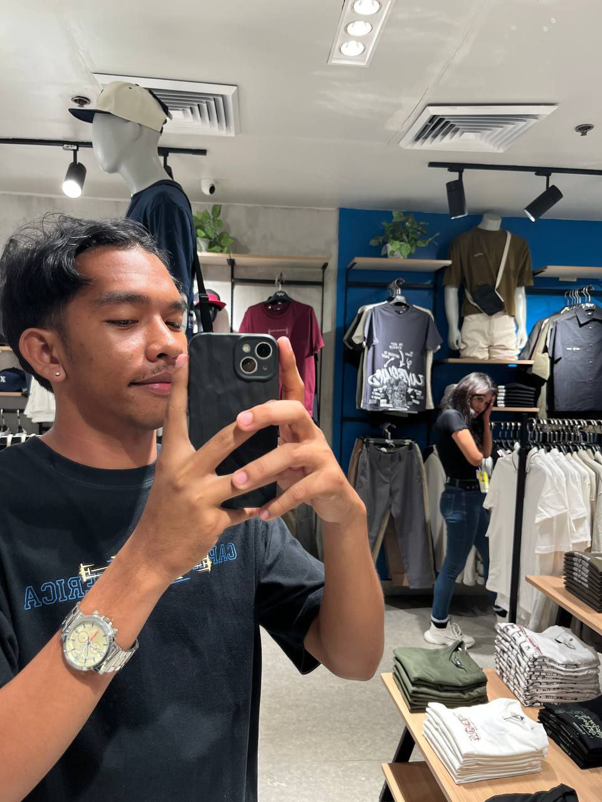
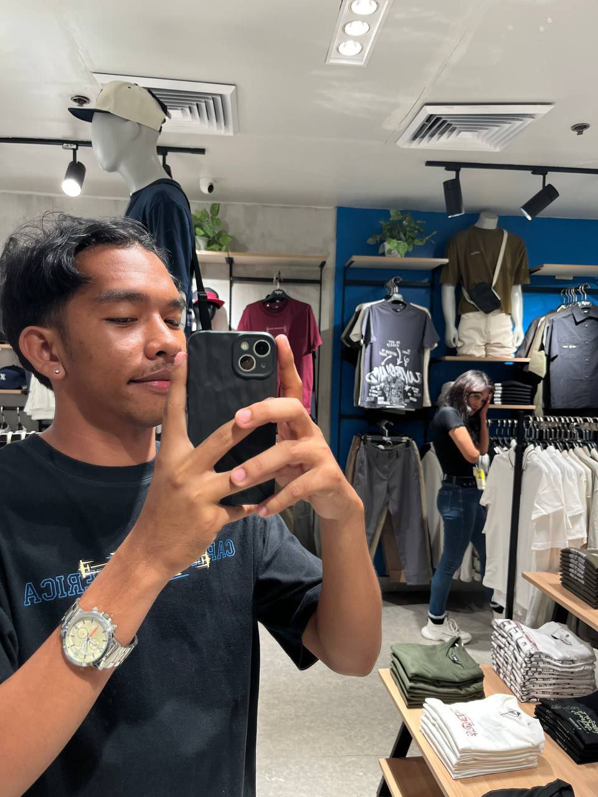
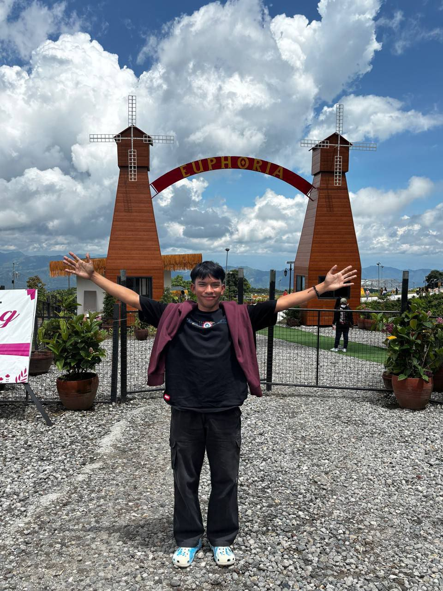
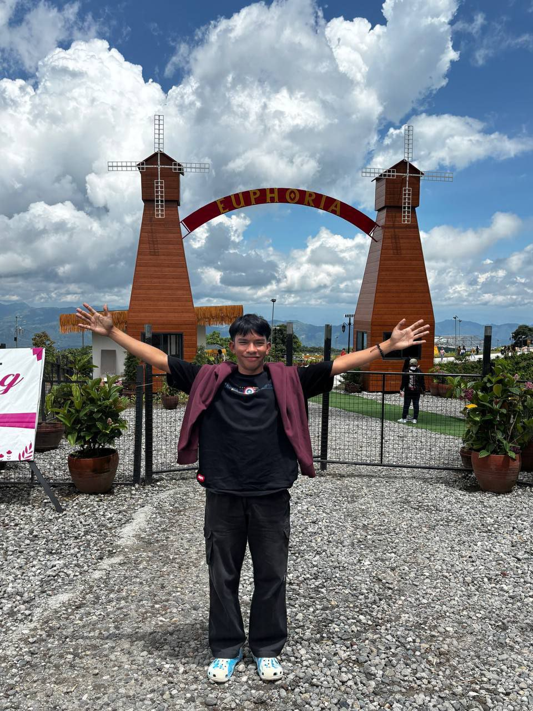

 

💌 For You
Hi Jhon Rey my Big BABY💖 I just want you to tell you how special you are to me. Your handsome face, your presence, and your kindness mean more than words. Sorry if this feels a bit much—this is really all I can give you, and I hope you’ll appreciate it. I know it’s simple, but I truly gave my best and everything I know into this code. You know how I always tell you that you’re handsome, even if you don’t believe it yourself—we even end up arguing about it sometimes. I know a lot of people like you, but I still took the risk to confess, even knowing I didn’t really have a chance. And that’s okay. I never assumed you would return my feelings. It’s my first time confessing to a guy—and it had to be you, HAHAHA. Honestly, I felt so relieved after finally letting my feelings for you out. I’m happy that we became friends, and I hope nothing changes, even as time goes by. I hope you eventually find the one meant for you—someone who won’t give you trauma, who will love you genuinely and completely, no matter who you are. And I also hope you’ll find joy in your own life. I know you feel like you’re living only for your parents, but it hurts me that that’s the only reason you think you have to stay in this world. What about me, who loves you? HAHAHA. Please take care of yourself. I still have plans to take care of you in the future. If you haven’t found the one meant for you yet, I’ll baby you for now—before the real one who truly owns your heart comes along. Loveeeyaahhh XOXO That’s all. Muahhh 💋 Thank you for being you 🌹 Happy Valentine’s Day 💕